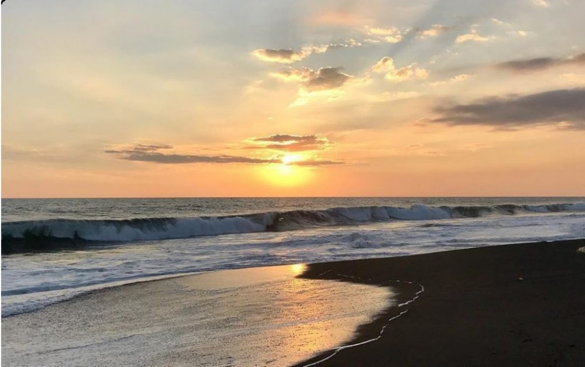
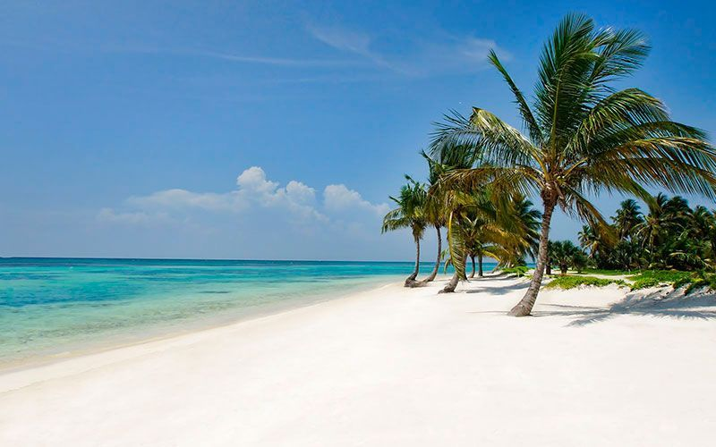
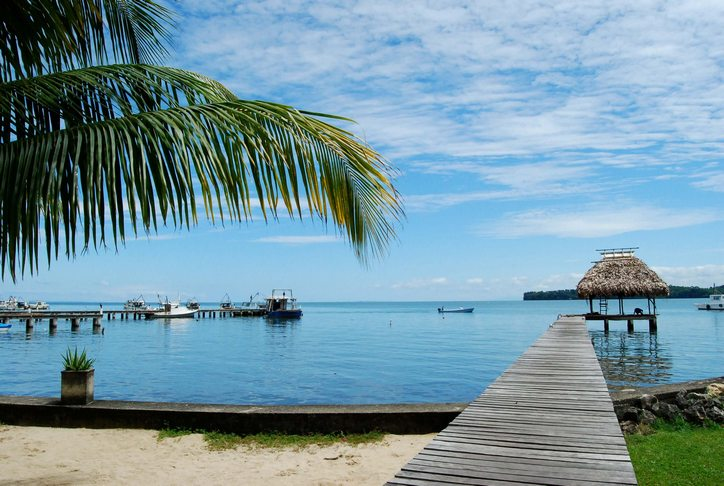
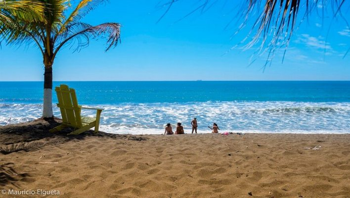

Playas Destacadas

Monterrico
La playa más visitada del Pacífico guatemalteco. Arena volcánica negra, reservas de tortugas y espectaculares atardeceres.
Pacífico

Playa Blanca
Aguas cristalinas color turquesa y arena blanca. El paraíso caribeño de Guatemala.
Caribe

Livingston
Cultura garífuna única, accesible solo por lancha, fusión caribeña auténtica.
Caribe

Hawaii
Playa poco intervenida, ideal para quienes buscan tranquilidad y naturaleza pura.
Natural